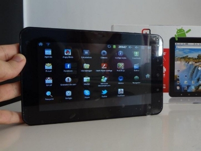
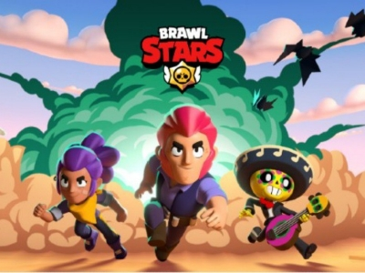

GAMES
GAMES GAMES
GAMESOs games sem dúvidas, foram elementos que marcaram toda a minha infância e adolescência, sendo por muitos anos, o meu principal hobby dentre tantos outros que costumava praticar. Sempre tive muito apego pelos games, principalmente os mobile que sempre foram os meus favoritos, pois por bastante tempo, foram o único meio para eu ter mais contato com esse universo tão vasto e rico em entretenimento, sendo eles também, um fator chave para minha aproximação com a tecnologia, e criação de metas e objetivos para a minha vida.
O meu primeiro contato com games ocorreu durante a minha infância, quando eu finalmente entrei em contato com a tecnologia atual da época. Nesse período, estávamos recebendo em casa o primeiro computador para uso familiar que meus pais compraram após meu nascimento, eu tinha cerca de 6 ou 7 anos.
Apesar de não ter mutas lembranças desse período, muito menos modelo ou marca daquela máquina, uma coisa ficará sempre marcada em minha mente, a internet era horrível, lenta até de mais, e eu não tinha tanta liberdade para usar o PC, mas podia jogar aquele clássico "joguinho de fazer bolos", o Purble Place.

Purble Place, jogo introduzido no Windows Vista. Fonte.
O Purble Place era um jogo pré-instalado do Windows Vista, cuja recepção do sistema operativo lançado em 2005 não foi muito boa. De entre as opções disponíveis, o Purble Place era popular por ser novo e diferente dos habituais jogos pré-instalados nas diferentes versões do Windows.
Gameplay do game Purble Place, publicada pelo canal Sasuke Crew.
O jogo tem 3 jogos integrados num só: Comfy Cakes, Purble Pairs e Purble Shop. O Purble Pairs carateriza-se por ser um desafio de memória de padrões ao pedir a identificação de todas as peças pares escondidas no tabuleiro. Os dois jogos seguintes decorrem num ambiente 2D de fábrica de bolos onde o objetivo é preparar os bolos requisitados no ecrã à esquerda usando os moldes, ingredientes e toppings disponíveis.
Leia na íntegra em "5 Jogos Windows clássicos e como jogá-los agora".
Apesar de minha introdução ao "mundo dos games" ter sido através de jogos para computador, minha paixão foi de fato pelos jogos mobile. Isso se deu pela ausência de um PC por boa parte da minha vida após aquele que usava quando criança, ter dado problema e nunca ter sido reparado ou substituido.
Após perder aquele PC, fiquei boa parte da minha infância, sem ter muito contato com tecnologia além das aulas de informática da escola, ou de vezes que ia em Lan Houses. Isso perdurou até cerca dos meus 10 anos, quando eu ganhei meu primeiro touchscreen, sendo um modelo antigo de tablet da Multilaser.
Multilaser Diamond, lançado em 2012. Fonte.
Não me recordo ao certo o modelo de meu antigo aparelho, mas era algo parecido com Multilaser Diamond lançado em 2012. Esse dispositivo com sistema operacional Android, não foi exatamente meu primeiro contato com um touchscreen, mas de fato, a partir dele que eu adentrei profundamente no mundo dos games mobile.
Começando com os games mais voltados para o público infantil, ao qual eu me encaixa naquele momento, os primeiros jogos que me "viciei", foram clássicos mobiles como Angry Birds, Subway Surfers, Pou e My Talking Tom, e apenas um pouco mais tarde, descobri o Clash of Clans, game o qual, de fato me prendeu por um tempo e me apresentou sua empresa desenvolvedora, a Supercell, e desde então, tenho jogado todos os seus games lançados ano após ano.
Criada em 2010 por Ilkka Paananen, a Supercell é uma companhia finlandesa especializada no desenvolvimento de jogos para smartphones e tablets, sendo reconhecida mundialmente no mercado mobile pelos games Clash of Clans e Clash Royale. Sendo graças a ela, que mais tarde comecei a jogar o tão aguardado Brawl Stars, em 12 de dezembro de 2018, data de seu lançamento global.
Leia na íntegra em "Tudo sobre Supercell - História e Notícias - Canaltech".
Primeira tela de ínicio do Brawl Stars. Fonte.
Brawl Stars é um jogo para celular disponível para baixar de graça no Android e iPhone (iOS). Desenvolvido pela Supercell, o game passou por um longo período de testes antes de ter o seu lançamento global oficial.
Gameplay do game Brawl Stars, publicada pelo canal Coffee.
Brawl Stars tem vários aspectos competitivos no seu formato. O título é uma mistura de jogos de tiro, MOBAs e Battle Royales. Ou seja, Brawl Stars mescla diferentes características de jogos que já são sucesso nos esports, como PUBG, DotA 2, League of Legends (LoL) e o próprio Clash Royale. Assim, o game oferece modos variados de partidas, com destaque para os eventos 3x3 e o Pique-Gema.
Leia na íntegra em "Brawl Stars: jogo da Supercell é nova promessa dos esports".
O Brawl Stars, sem dúvidas, foi o game que mais me marcou ao longo de todos esses anos, sendo durante a minha adolescência, o principal se não o único jogo que eu joguei por certo período. Me apaixonei por Brawl Stars desde o seu lançamento, e até hoje, mesmo não o jogando mais e tendo jogado muitos outros games, Brawl Stars continua sendo o meu favorito, e provavelmente continuará sendo por um bom tempo.
{kind=link}
{kind=link}